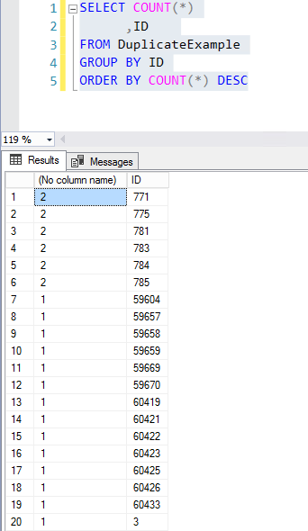
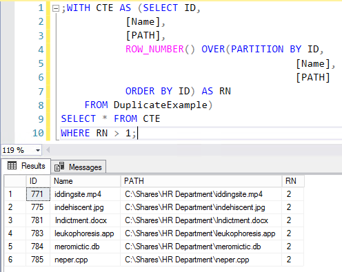

Summary: How to Identify and Delete Duplicates
Issue: Duplicate entries need to be removed from the database for reasons.
Instructions:
If this is critical data, BACKUP THE TABLE FIRST BEFORE DELETING ANY DATA!!!
The following syntax will give you a count of rows per unique value(s) specified
SELECT COUNT(*), [value]
FROM [table]
GROUP BY [value]
ORDER BY COUNT(*) DESC
To put some context into the above query, here is an example with output in SSMS. A table was created with intentional duplicate entries for files. In the output we see there are 6 duplicated entries.

Now we will leverage the Transact-SQL 'common table expression', or CTE to more efficiently root out and delete the duplicates.
;WITH cte AS (SELECT col2, ROW_NUMBER() OVER (PARTITION BY Col1, Col3 ORDER BY ( SELECT 0)) RN FROM #MyTable) DELETE FROM cte WHERE RN > 1
I am using ORDER BY (SELECT 0) above as it is arbitrary which row to preserve
in the event of a tie.
To preserve the latest one in RowID order for example you could use ORDER BY RowID DESC.
Here is an example to provide some context. Rather than completing with
DELETE FROM CTE WHERE RN > 1, we will use
SELECT * FROM CTE WHERE RN > 1 as this will display which duplicate rows
are to be deleted. It is highly recommended to verify what data is to be deleted
beforehand to ensure accuracy.

A more detailed discussion is available from this thread:
http://stackoverflow.com/questions/18932/how-can-i-remove-duplicate-rows/3822833#3822833
Product:
StealthAUDIT
Module:
Database/SQL;SA - Core